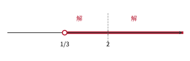

例題 4数と式 絶対値を含む不等式（場合分け）
不等式 \(|x-2|<2x+1\) を解け。
解き方（まず考え方）
\(x-2\) の正負で場合分けして絶対値をはずす。それぞれの場合の「範囲の条件」と「解いた結果」の共通部分を取り、最後に2つの場合の解を合わせる（和集合）。
\[|A|=\begin{cases}A&(A\geqq0)\\-A&(A<0)\end{cases}\]コツ場合ごとに「その部屋にいる人」だけを数える。部屋の外の答えは数えない。最後に全部屋の合計を出す。
解答
STEP 1 ① \(x\geqq2\) のとき
\(|x-2|=x-2\)。
\[x-2<2x+1\ \Rightarrow\ -x<3\ \Rightarrow\ x>-3\]\(x\geqq2\) と \(x>-3\) の共通部分は \(x\geqq2\)。
STEP 2 ② \(x<2\) のとき
\(|x-2|=-(x-2)=2-x\)。
\[2-x<2x+1\ \Rightarrow\ -3x<-1\ \Rightarrow\ x>\dfrac13\]（負の数で割ったので向きが逆）。\(x<2\) と \(x>\dfrac13\) の共通部分は \(\dfrac13<x<2\)。
STEP 3 ①と②を合わせる
\(\dfrac13<x<2\) と \(x\geqq2\) をつなぐと \(x>\dfrac13\)（図）。

STEP 4 端点を確かめる
\(x=\dfrac13\)：左辺 \(\left|\dfrac13-2\right|=\dfrac53\)、右辺 \(2\cdot\dfrac13+1=\dfrac53\)。等しいので \(<\) は成り立たず、含まれない。
【答案（テストに書く形）】
\[x>\dfrac13\]答
練習問題 4
- \(|x-3|\leqq x+1\)
- \(|x+1|>2x-2\)
- \(|2x-1|<x+4\)